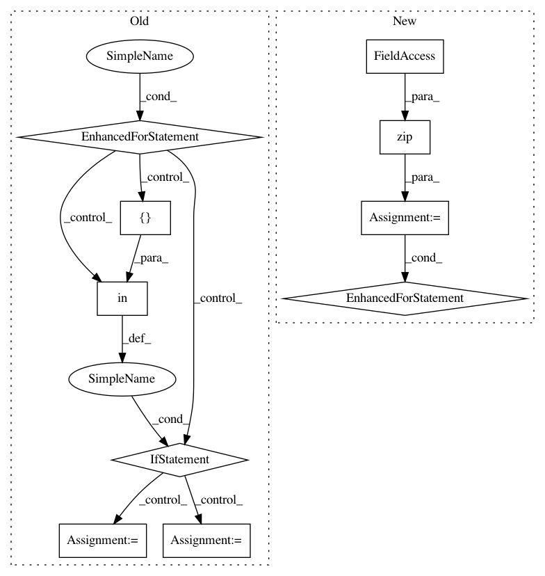

a968bc8ae127d1e3833c2fa468858f9c48f6923c,batchflow/models/torch/encoder_decoder.py,EncoderModule,forward,#EncoderModule#Any#,22
Before Change
b_counter, d_counter = 0, 0
outputs = []
for _ in range(self.num_stages):
for letter in self.encoder_layout:
if letter in ["b"]:
x = self.encoder_b[b_counter](x)
b_counter += 1
elif letter in ["d", "p"]:
x = self.encoder_d[d_counter](x)
d_counter += 1
elif letter in ["s"]:
outputs.append(x)
outputs.append(x)
if self.return_all:
return outputs
After Change
def forward(self, x):
outputs = []
for letter, layer in zip(self.layout, self.values()):
if letter in ["b", "d", "p"]:
x = layer(x)
elif letter in ["s"]:
outputs.append(x)
outputs.append(x)
if self.return_all:
return outputs
In pattern: SUPERPATTERN
Frequency: 3
Non-data size: 10
Instances
Project Name: analysiscenter/batchflow
Commit Name: a968bc8ae127d1e3833c2fa468858f9c48f6923c
Time: 2020-02-10
Author: Tsimfer.SA@gazprom-neft.ru
File Name: batchflow/models/torch/encoder_decoder.py
Class Name: EncoderModule
Method Name: forward
Project Name: jhfjhfj1/autokeras
Commit Name: 41c99fbf385a8c875fb6181ce7301e4bc218535b
Time: 2020-04-18
Author: jhfjhfj1@gmail.com
File Name: autokeras/keras_layers.py
Class Name: CategoricalEncoding
Method Name: call